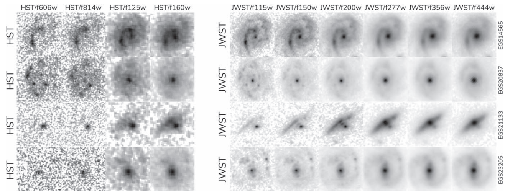
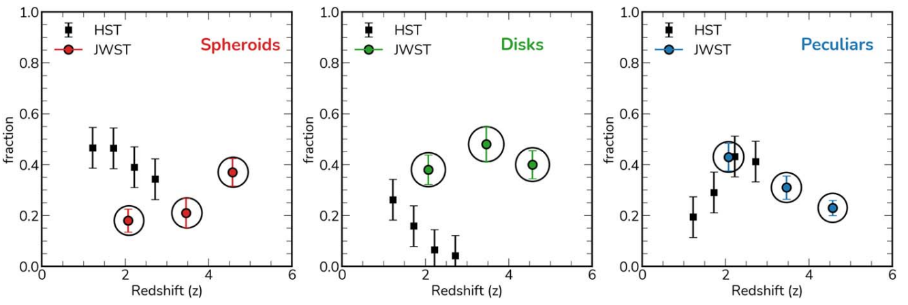
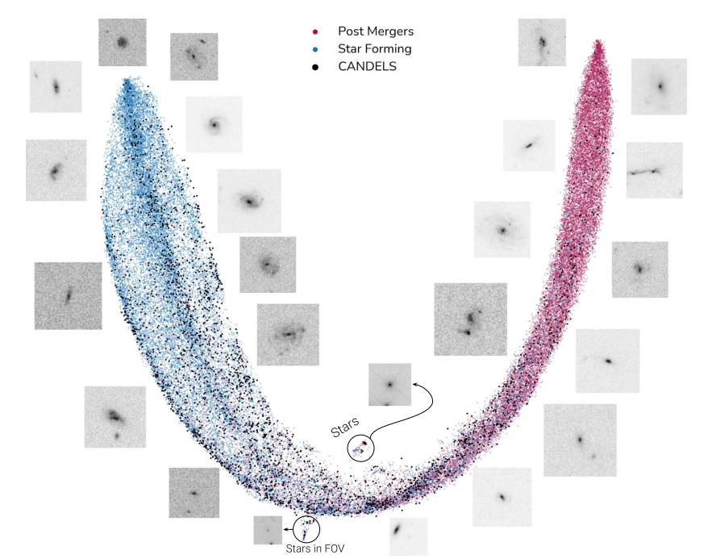
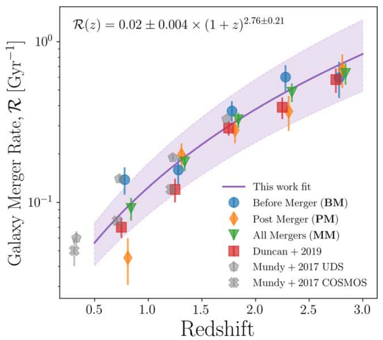

As of September of 2025, I authored/co-authored 59 peer-reviewed papers (8 published as a first-author, 2 in prep),
h-index: 23
ADS Listing: (link)
First-author Contributions
Ferreira et al. "Galaxy Mergers in UNIONS – I: A Simulation-driven Hybrid Deep
Learning Ensemble for Pure Galaxy Merger Classification" MNRAS, submitted.
Ferreira et al. "The JWST Hubble Sequence: The Rest-Frame Optical Evolution of Galaxy Structure at
z=1.5 to 6.5" ApJ, 2023. (link)

The impact of wavelength coverage for the characterization of high-redshift
galaxies. Comparison between HST and JWST.
Ferreira et al. "Panic! at the Disks: First Rest-frame Optical Observations of Galaxy Structure at z >
3 with JWST in the SMACS 0723 Field," ApJL, 2022. (link)

The surprising abundance of disk galaxies at high redshift using JWST in
comparison to HST data.
Ferreira, et al. "A Simulation-driven Deep Learning Approach for Separating Mergers and Star-forming
Galaxies: The Formation Histories of Clumpy Galaxies in All of the CANDELS Fields," in ApJ, 2022. (link)

Blind UMAP representations that separate non-merging star-forming galaxies
from post-mergers at high redshift.
Ferreira et al., "Galaxy Merger Rates up to z~3 Using a Bayesian Deep Learning Model: A Major-merger
Classifier Using IllustrisTNG Simulation Data," in ApJ, 2020. (link)

Galaxy merger rates measured by a blind deep learning model. The first
agreement between merger rates measured from morphology and pair statistics.
de Albernaz Ferreira L,
and Ferrari F, "The impact of redshift on galaxy morphometric classification: case studies for SDSS, DES,
LSST and HST with Morfometryka," in MNRAS, 2018. (link)
A visual comparison of results of PGC 4992 FERENGI simulations for each of
the targeted instruments. From top to bottom: SDSS, DES, LSST and
HST. The difference in how deep we can resolve structures are evident